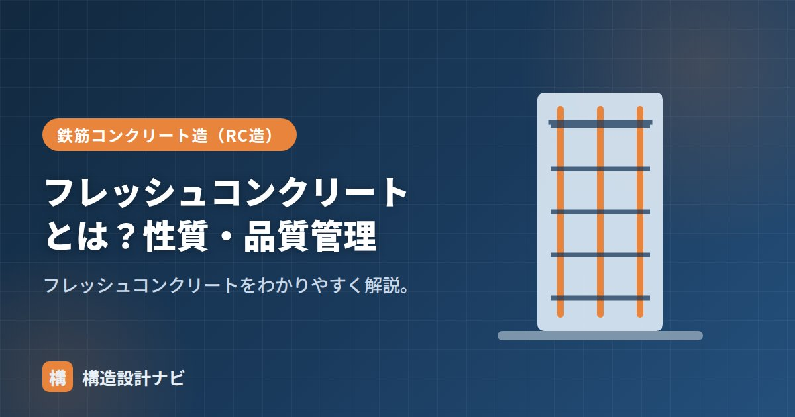

フレッシュコンクリートとは？性質・品質管理

フレッシュコンクリートとは、セメント・水・骨材などを練り混ぜてから固まりはじめるまでの、まだ軟らかい状態のコンクリートのことです。英語の「fresh（新鮮な）」に由来し、生コンクリート工場から現場に運ばれ、打込み・締固め・仕上げが行われるまでの一連の工程はすべてこの段階で進みます。この段階の性質と品質管理が、固まった後の強度・耐久性・美観を大きく左右するため、構造設計者・施工管理者ともに欠かせない知識です。
- フレッシュコンクリートは固まる前の軟らかい状態のコンクリート
- ワーカビリティ・コンシステンシーなど施工性に関わる性質がある
- スランプ・空気量・温度・塩化物量などを現場で品質管理する
フレッシュコンクリートの性質
| 性質 | 意味 |
|---|---|
| ワーカビリティ | 運搬・打込み・締固め・仕上げのしやすさ |
| コンシステンシー | 軟らかさ（変形・流動に対する抵抗） |
| 材料分離抵抗性 | 骨材とペーストが分離しにくい性質 |
| フィニッシャビリティ | 仕上げのしやすさ |
これらの性質は互いに独立しているわけではなく、たとえば水を増やしてコンシステンシーを軟らかくすると、材料分離抵抗性が低下しやすくなるなど、トレードオフの関係にあります。目的の性能をすべて満たすように、混和材料や配合の工夫でバランスを取るのが設計・調合の腕の見せどころです。
なぜフレッシュ時の管理が重要か
フレッシュコンクリートは時間の経過とともに水和反応が進み、刻一刻と性質が変化します。練り混ぜてから時間が経ちすぎると、スランプが低下して打込みにくくなり、無理に締め固めようとすると豆板（ジャンカ）や充填不良の原因になります。逆に軟らかすぎると、ブリーディングや材料分離を起こしやすくなります。「固まる前のわずかな時間で、適切な状態を保ったまま打ち終える」ことが、フレッシュコンクリートの管理の本質です。
品質管理の項目
生コンクリートの受入れ時などに、次の項目を確認します。
受入れから打込みまでの流れ
現場では、生コン車が到着すると荷卸し前に上記の項目を検査し、基準を満たしたものだけを打込みに使用します。練り混ぜから打込み終了までの時間にも上限が設けられており、これを超えたコンクリートは原則として使用できません。暑い時期は水和反応が早く進むため時間管理がより厳しくなり、寒い時期は凍結を避けるための保温対策が必要になります（→暑中コンクリート・寒中コンクリート）。
真夏の受入れ検査に立ち会うと、荷卸し時のスランプは基準内でも、渋滞で運搬が延びた車だけ明らかに硬くなっていることがあります。練混ぜから打込みまでの経過時間を伝票で必ず確認する癖をつけています。
4つの性質の関係（図解）
フレッシュコンクリートの性質は互いに関連しており、一つを良くすると別のものが悪くなるトレードオフの関係にあります。
時間管理：練混ぜから打込みまで
フレッシュコンクリートは時間とともに硬くなっていくため、練混ぜから打ち終わるまでの時間に上限が定められています。
| 管理項目 | 基準（目安） | 理由 |
|---|---|---|
| 練混ぜから荷卸しまで | 1.5時間以内（JIS） | 時間が経つとスランプが低下し、打込み・締固めが困難になる |
| 練混ぜから打込み終了まで | 外気温25℃未満：120分以内 外気温25℃以上：90分以内 | 気温が高いほど水和反応が早く進む |
| 打重ね時間の間隔 | 外気温25℃未満：150分以内 外気温25℃以上：120分以内 | 超えるとコールドジョイントが生じる |
これらの時間は、生コン工場から現場までの運搬時間・現場での待機時間・打込み作業時間のすべてを含みます。渋滞や打設の段取り不良で時間を超過しそうになると、現場では加水したくなる誘惑が生じますが、加水は品質を根本から損なうため絶対に行ってはいけません。時間内に打ち終えられるよう、打設計画の段階で無理のない配車と人員配置を組むことが重要です。
よくある質問
Q1. ワーカビリティとコンシステンシーはどう違うのですか？
コンシステンシーは「軟らかさ」という物理的な性質だけを指し、スランプ試験で数値化できます。一方ワーカビリティは、運搬・打込み・締固め・仕上げのしやすさという総合的な作業性を意味し、軟らかさに加えて材料分離のしにくさや粘りも含みます。つまり、スランプが同じでもワーカビリティが良いコンクリートと悪いコンクリートが存在します。
Q2. スランプは大きいほうがよいのですか？
施工性だけを見れば大きいほうが打ちやすいのですが、品質の面では小さいほうが有利です。スランプを大きくするには単位水量を増やす必要があり、それは強度低下・乾燥収縮の増大・ブリーディングの増加につながります。したがって「施工が可能な範囲で、できるだけ小さいスランプ」を選ぶのが原則です。配筋が密で打込みが難しい部位では、水を増やすのではなく減水剤でスランプを確保します。
Q3. フレッシュコンクリートの温度はなぜ管理するのですか？
温度が水和反応の速度を左右し、施工性と品質の両方に影響するためです。温度が高いとスランプの低下が早く、打重ね可能な時間が短くなるうえ、コールドジョイントのリスクが高まります。逆に低温では強度発現が遅れ、初期凍害のおそれもあります。暑中コンクリートでは打込み時の温度を35℃以下に抑えるなどの規定があり、必要に応じて材料の冷却や打設時間帯の調整を行います。
まとめ
- フレッシュコンクリートは固まる前の軟らかいコンクリート。
- ワーカビリティ・コンシステンシー・材料分離抵抗などの性質がある。
- 各性質はトレードオフの関係にあり、配合や混和材料でバランスを取る。
- スランプ・空気量・温度・塩化物・強度を現場で品質管理する。